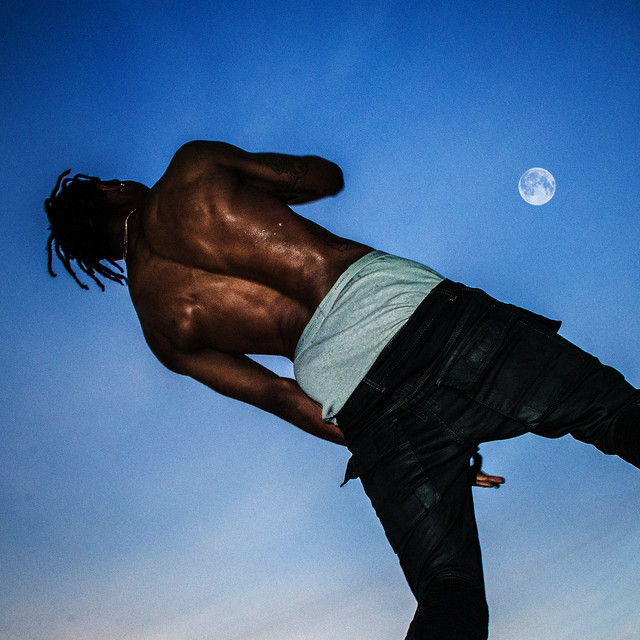

American Dream - 21 Savage
Often described as 21 Savage's best album so far, American dream is the perfection of 21's style, troughout the album he shows us again and again that he was able to master his style, from the beat selection to the choice of the features, 21 has got everything right with this album.

Plan A - Lil Tecca
Released in late september, this was supposed to be a very awaited summer album than ended up releasing a bit too late. However this album is definitly one of tecca's most thought out project making it one of the best albums of the year.

2093 - YEAT
2093 by Yeat is an album that was supposed to redefine his way of making music and he succeeded at just that. This project created a whole other side of Yeat that most weren't expecting, but it was realised in such a way that the album actually sounds like it comes from the future and not in a redundant way either. This opened up the door for his new project "LYFESTYLE" that actually dropped during the making of this page.

We Don't Trust You - Metro Boomin & Future
Highly anticipated album from the producer/rapper collaboration part of a series of 3 projects supposed to drop in 2024 : We don't trust you, We still don't trust you and another one supposed to drop by the end of the year. The incredible production from metro boomin is the perfect match for Future's style of rapping on top of all the guest features such as Travis Scott, The Weeknd, Playboi Carti, Kendrick Lamar and many other big names. This album really cemented Metro Boomin as the current main producer in the rap industry.

Hardstone Psycho - Don Toliver
This album was teased by differents individual songs such as "Bandit" that were showing a change in the direction of Don's music. With this album he managed to embrace the sort of "biker lifestyle" feel that he wanted to give his album. This is a very different album from his last ones that were more love oriented such as "Lovesick" or "Heaven or Hell".
i5u5we5 - Homixide Gang
One of the coolest album released by members of the "Opium" label this year, with various touch of rock elements homixide gang were able to create a unique sound for themselves that could be shaping the way for their future projects. Definitly keep an eye out for their next project.
Love Lasts Forever - Destroy Lonely
This album is very different from Lone's previous albums, he kind of leaves the "Opium" style that he used to embrace behind to bring us a heartfelt album about love and topics we are not used to hearing from him. Overall the album has some interesting features like "Loves hurts" with Lil Uzi Vert and occasional features from Ken Carson on the extended version of the tape.

Days Before Rodeo
Released for the first time in 2014, Days Before Rodeo was Travis's second mixtape to lead to his debut album "Rodeo". However this was deleted off of all the streaming plateforms and was only rereleased this year, since then many songs have been added. I think this is one of travis's best project at the time since he has a very diverse catalog and this embodies his early style of music the best. Notable songs of this album are "Drugs you should try it" and "Zombies"
Molly Santana - Molly Santana
An undergound masterclass from a very underrated artist. Molly Santana managed to make a very complete but yet diverse album with very personnal songs but also very catchy and dancy ones. An upcoming artist who continues to make great music with her latest EP "Masonik Musik".
A Great Chaos Deluxe - Ken Carson
Altough A Great Chaos was originally released in 2023, the deluxe version that released this year actually adds another dimension to thr album, kind of like giving it a second life. Titles like "Loading" or "Overseas" complete the project and actually lead the way for his new album that should drop shortly "More Chaos".
Just in case you might be interested here is my playlist of my favorite rap songs of 2024